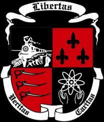

Bienvenidos
Hola, Mi nombre es Jacobo Andres Pacheco Martinez. Este blog personal tiene como objetivo representar mi pasado, mi situacion actual y mi proyeccion a futuro. Espero que lo disfruten!
Mi vida anteriormente
Naci en la ciudad de Barranquilla el 2 de Mayo del 2003. Durante mi infancia y adolescencia estudie en el British International School de Barranquilla. No obstante, mis ultimos 2 años academicos fueron en el Colegio Albania, situado en La Guajira. Academicamente, me destaque por ser un estudiante analitico y maravillado por la literatura. Sin embargo, demostre desde una temprana edad un interes por la tecnologia y lo que esta ofrecia para el desarrollo social del ser humano.

Mi situacion actual
Actualmente, me encuentro cursando el tercer semestre de Ingenieria Informatica en la Universidad de La Sabana. Personalamente, he logrado notar un avance significativo en cuanto a mis conocimientos generales de la carrera. De la misma manera, he aprendido de manera detallada sobre la programacion orientada a objetos. Este tipo de programacion la considero de gran importancia ya que ofrece una mejor calidad de software que permite solucionar problemas de baja y gran escala.

Proyeccion a futuro
Finalmente, quisiera hablar sobre mis proyecciones a futuro en relacion con la carrera que estoy cursando. Teniendo en cuenta mi interes por la psicologia y la informatica, considero que con los conocimientos de ambas areas podria llevar a cabo proyectos importantes. Considero que el desarrollo de la inteligencia artifical se puede ver beneficiada por la union entre las humanidades y la ciencia. Por ende, a futuro me proyecto trabajando con dichos temas para solucionar los problemas que el mundo moderno traera sobre la humanidad.